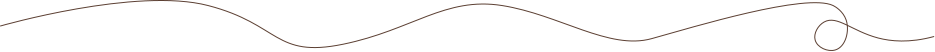

Tema 2 - Grundlæggende web
Beskrivelse af tema
Som det første tema blev jeg introduceret til de grundlæggende elementer indenfor HTML og CSS, herunder HTML-struktur, indsættelse af billeder og måden, hvorpå vi kan kontrollere indhold og design med CSS. Derudover lærte jeg at bruge værktøjer til at analysere websites, hvilket gav mig indsigt i typografi, tekstur, farver og gestaltlovene. Vores første opgave var at lave en website ud fra et givet wireframe, hvor udfordringen var at kunne placere billeder og tekst.
Proces og løsning
Jeg blev tildelt en wireframe, et layoutdiagram og billeder, som vi skulle implementere i VS Code. Først skulle vi kun arbejde med HTML og fokusere på at indsætte alt indholdet. Derefter skulle vi organisere elementerne i et grid og tilføje CSS for at få layoutet til at matche wireframen. Vi fik også frihed til at vælge farver og finde skrifttyper på Google Fonts.